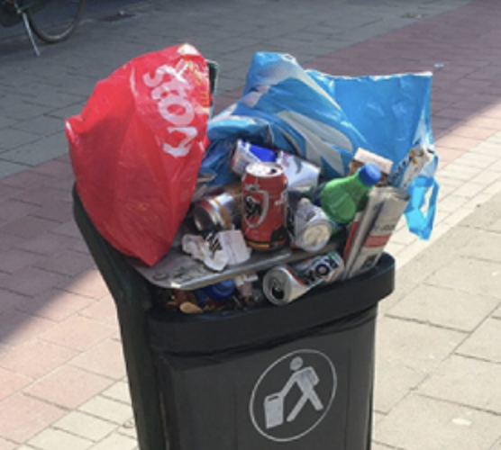

Impact van het Pimpen van Oude Spullen
Positieve Invloeden van Het Opknappen
Door oude spullen op te knappen in plaats van ze weg te gooien, maak je een positieve impact op het milieu en de gemeenschap om je heen. Het zorgt voor minder afval, wat betekent dat er minder spullen op de vuilnisbelt belanden. Ook helpt het om minder nieuwe grondstoffen te gebruiken, waardoor je je ecologische voetafdruk verkleint. Bovendien kan het opknappen van spullen ambachten en lokale economieën ondersteunen, omdat je vaak lokale winkels of vakmensen inschakelt voor materialen of hulp.
De Impact van Overconsumptie
Overconsumptie betekent dat we meer spullen kopen en gebruiken dan we eigenlijk nodig hebben voor een duurzame levensstijl. Dit heeft vergaande gevolgen, niet alleen voor de planeet, maar ook voor de economie en onze samenleving als geheel.
Waarom is Overconsumptie een Probleem?
Milieuvervuiling: Overconsumptie zorgt voor een toename in productie, wat leidt tot meer afval en vervuiling. Wereldwijd produceren we jaarlijks meer dan 2 miljard ton afval, en een groot deel daarvan komt voort uit ons consumptiegedrag (Wereldbank, 2021). Als je in Amsterdam een rondje loopt merk je al snel een heleboel overvolle prullenbakken staan of voedsel dat onnodig wordt weggegooid. Hier is de overconsumptie goed aan te zien
Klimaatverandering: De productie en het transport van goederen veroorzaakt veel uitstoot van broeikasgassen. Volgens het Global Footprint Network gebruiken we hulpbronnen alsof we 1,7 aarde tot onze beschikking hebben, wat betekent dat we meer verbruiken dan de planeet kan aanvullen (Global Footprint Network, 2023).
Economische Ongelijkheid: Terwijl sommigen overmatig consumeren, zijn er ook veel mensen die in armoede leven. Uit een rapport van Oxfam blijkt dat de rijkste 1% van de wereldbevolking evenveel bezit als de rest van de wereldbevolking samen (Oxfam, 2022). Overconsumptie draagt bij aan deze ongelijkheid.
Gezondheidsproblemen: Een cultuur van overconsumptie kan ook leiden tot ongezonde leefgewoonten. De Wereldgezondheidsorganisatie (WHO) meldt dat de cijfers van obesitas wereldwijd toenemen, en overconsumptie is hierbij een belangrijke factor (WHO, 2022).
Feiten en Cijfers
Volgens de Verenigde Naties gaat bijna een derde van al het voedsel dat geproduceerd wordt verloren of wordt verspild, terwijl miljoenen mensen honger lijden (VN, 2021). Dit toont niet alleen aan hoe inefficiënt ons consumptiegedrag is, maar ook hoe dringend verandering nodig is.
Wat Kunnen We Doen?
Bewust Consumeren: Door bewuste keuzes te maken, zoals het kopen van duurzame en lokale producten en het vermijden van overbodige aankopen, kunnen we een verschil maken. Dit helpt ons consumptiegedrag te verduurzamen en is belangrijk voor het behoud van onze planeet.
Minimalisme: Minder spullen bezitten en waarderen wat je hebt, kan een grote impact hebben. Minimalisme helpt niet alleen om onze ecologische voetafdruk te verkleinen, maar kan ook bijdragen aan een gelukkiger en eenvoudiger leven.
Educatie: Door jezelf en anderen te informeren over de impact van overconsumptie, kunnen we duurzame gewoonten stimuleren. Educatie is een belangrijk middel om een cultuuromslag richting bewuster consumeren te bereiken.
Steun Duurzame Bedrijven: Kies voor producten van bedrijven die duurzaamheid en ethische productie hoog in het vaandel hebben. Door dergelijke keuzes te maken, helpen we de vraag naar duurzame producten te stimuleren.
Sluit je Aan bij de Beweging!
Overconsumptie is een groot probleem dat vraagt om onze gezamenlijke inspanning. Doe mee met onze campagne om bewustwording te vergroten en duurzame veranderingen aan te moedigen. Samen kunnen we een verschil maken voor de planeet en de generaties die na ons komen!
Contact
Heb je vragen of wil je meer weten? Neem gerust contact met ons op via maf@voorbeelden.com of volg ons op sociale media!
Bronnen
- Global Footprint Network. (2023). Earth Overshoot Day. Global Footprint Network
- Oxfam. (2022). Inequality Kills. Oxfam
- VN. (2021). The State of Food Security and Nutrition in the World. VN
- Wereldbank. (2021). What a Waste 2.0: A Global Snapshot of Solid Waste Management to 2050. Wereldbank
- Wereldgezondheidsorganisatie (WHO). (2022). Obesity and Overweight. WHO